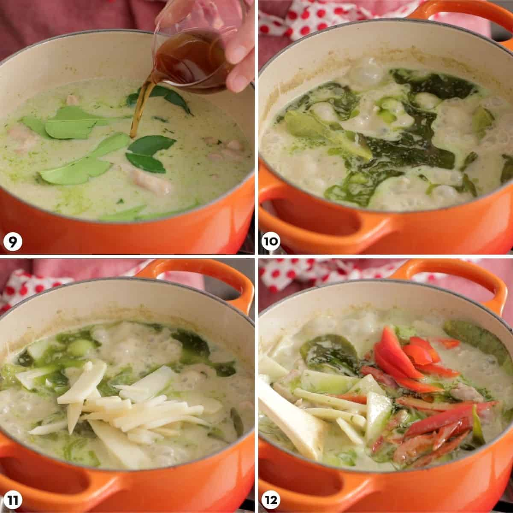

Authentic Thai Green Curry
--Orginal Recipe--

Description
Thai green curry chicken is once of the most popular curries out there.
It's sweeter taste from the coconut and kick from the chilli is a pleaser for many taste palettes.
Despite its complex flavours it's quite easy to make at home.
It's gluten free, and adaptable for vegans!
Ingredients
- Thai basil
- Bamboo shoots, canned
- Red bell pepper
- Green curry paste, homemade
- Makrut lime leaves
- Full fat coconut milk
- Fish sauce
- Palm sugar
- Boneless skinless chicken thigh fillets
- Chicken stock, unsalted
Method
- Optional step: Pound green curry paste and Thai basil leaves for an extra vibrant colour.
- Get the paste as fine as possible.
- Reduce the coconut milk until very thick
- Add the curry paste and saute for a few minutes.
- Toss chicken with the curry paste.
- Add coconut milk
- Add chicken stock
- Add makrut lime leaves.
- Add fish sauce and palm sugar.
- Simmer for 10-15 minutes until the chicken is fork tender.
- Add bamboo shoots and cook for a minute until the curry comes back to a boil.
- Stir in red bell pepper and turn off the heat.

- Add Thai basil and stir just until wilted.
- The green curry is now ready to serve with jasmine rice!
Return To Top
Return To Homepage